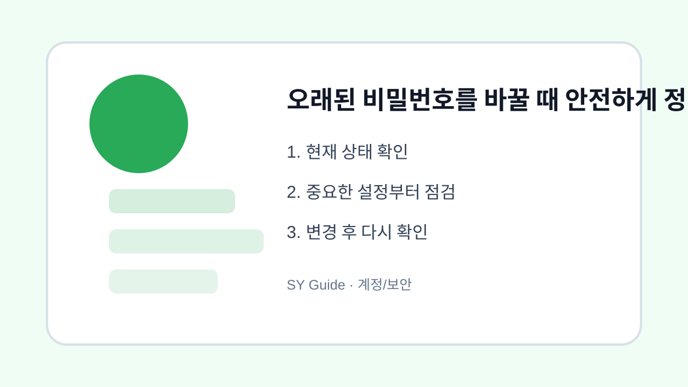

오래된 비밀번호를 바꿀 때 안전하게 정리하는 순서
오래된 비밀번호를 바꿀 때 메일, 금융, 포털 계정부터 우선순위를 정해 안전하게 정리합니다.

비밀번호를 오래 쓰면 유출 위험이 커지지만 모든 사이트를 한 번에 바꾸기는 어렵습니다. 그래서 중요한 계정부터 순서를 정하는 것이 현실적입니다. 특히 메일 계정은 다른 서비스의 비밀번호 재설정에 쓰이므로 가장 먼저 확인해야 합니다.
우선순위 정하기
메일, 금융, 포털, 쇼핑, 커뮤니티 순으로 중요도를 나누면 부담이 줄어듭니다. 같은 비밀번호를 여러 곳에서 쓰고 있다면 먼저 그 조합부터 바꿉니다. 유출된 사이트 하나 때문에 다른 계정까지 위험해지는 상황을 막기 위해서입니다.
비밀번호 관리 방식
기억하기 쉬운 한 가지 비밀번호를 반복해서 쓰기보다, 계정마다 다르게 만드는 것이 좋습니다. 비밀번호 관리 앱을 사용할 수도 있고, 최소한 중요한 계정만이라도 중복을 피해야 합니다. 생일, 전화번호, 단순 연속 숫자는 피합니다.
| 계정 | 우선순위 | 이유 |
|---|---|---|
| 메일 | 최상 | 복구 수단 |
| 금융 | 최상 | 금전 피해 |
| 포털 | 높음 | 연결 서비스 많음 |
| 쇼핑 | 중간 | 결제 정보 |
계정과 개인정보를 지키는 최종 점검
- 메일 계정 비밀번호부터 변경하기
- 중복 사용 중인 비밀번호 없애기
- 중요 계정은 2단계 인증 켜기
- 복구 이메일과 전화번호 확인하기
- 변경 후 모든 기기 로그아웃 여부 확인하기
비밀번호 정리는 한 번에 끝내려 하면 지칩니다. 중요한 계정부터 하루에 몇 개씩 바꾸는 방식이 더 안전하고 지속하기 쉽습니다.
오래된 비밀번호를 바꾸는 실제 상황
같은 비밀번호를 여러 사이트에서 오래 사용했다면 한 곳의 유출이 다른 계정으로 이어질 수 있습니다. 중요한 계정부터 서로 다른 비밀번호로 바꾸고 비밀번호 관리 방식도 함께 정리하는 것이 좋습니다.
비밀번호 변경에서 흔한 실수
비슷한 규칙으로 끝자리만 바꾸면 추측이 쉽습니다. 메일, 금융, 쇼핑, SNS처럼 피해가 큰 계정부터 고유한 비밀번호와 2단계 인증을 적용하는 것이 안전합니다.
오래된 비밀번호 변경을 먼저 점검해야 하는 이유
오래된 비밀번호를 바꿀 때는 먼저 어떤 계정이 다른 서비스의 복구 수단으로 쓰이는지 확인해야 합니다. 메일과 금융 계정처럼 피해가 큰 곳부터 바꾸고, 같은 비밀번호를 쓰는 사이트를 함께 정리하면 실제 보안 효과가 커집니다.
비밀번호 변경에서 자주 생기는 실수
비밀번호를 바꿀 때는 새 비밀번호를 어디에 기록하고 관리할지도 함께 정해야 합니다. 끝자리만 바꾸는 방식은 피하고, 중요한 계정에는 2단계 인증과 복구 연락처 확인을 같이 적용하는 것이 좋습니다.
비밀번호 변경 후 다시 볼 부분
변경 후에는 기존 기기에서 모두 로그아웃됐는지, 복구 이메일과 전화번호가 현재 사용하는 정보인지 다시 확인합니다. 비밀번호 관리 앱을 쓴다면 잠금 방식과 백업 방법도 함께 점검해 두는 편이 안전합니다.